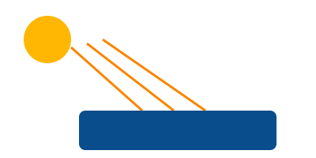

☀️ Absorção
A energia da luz é convertida em calor pelo material.
Descubra os fenômenos de absorção, reflexão e transmissão da radiação solar — e como aplicá-los para tornar sua piscina mais eficiente e sustentável.
A radiação solar é energia emitida pelo Sol na forma de ondas eletromagnéticas. Ao atingir a Terra, ela pode ser absorvida, refletida ou transmitida pelos materiais — e é exatamente isso que define se a sua piscina vai esquentar mais ou menos.
A energia da luz é convertida em calor pelo material.
A luz "quica" na superfície e volta ao ambiente.
A luz atravessa o material (ex: vidro, água).
Superfícies escuras absorvem mais luz visível e infravermelha, transformando-a em calor. Superfícies claras refletem boa parte dessa energia. É por isso que, no verão, pisar descalço em um asfalto escuro queima — e em uma areia clara, não.

Arraste o controle para mudar a cor da superfície e veja a temperatura subir.
Uma cobertura transparente deixa a luz entrar, mas impede que o calor saia.
Para automatizar o aquecimento da piscina, usamos sensores:
Leitura virtual do sensor:
Materiais escuros absorvem quase toda a luz visível e infravermelha, convertendo-a em calor. Revestimentos escuros no fundo da piscina aumentam a temperatura da água.
Absorver = reter a energia (gera calor). Refletir = devolver a energia ao ambiente (não aquece).
Sim! Ela permite a entrada da luz visível, mas bloqueia a saída do infravermelho reemitido pela água — é o chamado efeito estufa, o mesmo princípio das estufas agrícolas.
O SolÁqua é um projeto integrador do CEP que une Programação, Tecnociência e Robótica para promover educação científica acessível e sustentável. Acreditamos que a inclusão digital começa com um site que todos possam usar.